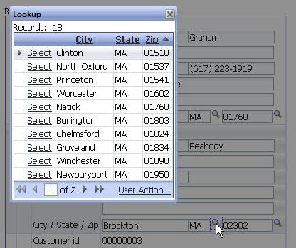

Lookups
Property name: 'Lookup' ('Fields->Field Properties' pane)
A lookup defined for a field now opens in an Ajax window instead of a popup window. This provides a number of improvements.
-
The lookup opens must faster
-
Opens the lookup in a window on the page, not in a new Browser window. This means popup blockers can't prevent the lookup from opening and the user can't leave them open.
-
The lookups can easily have dynamic and static filters applied. A dynamic filter will base the lookup on data already entered into the Grid (e.g. enter state of 'ma' - when you open the lookup only customers in 'ma' are shown)
-
The lookup can be configured to force a user to select from the lookup and not allow them to type in a value in the field with the lookup.
|  |
|
Lookup opened with dynamic filter on state |